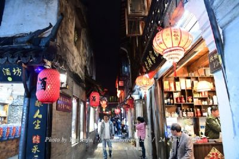
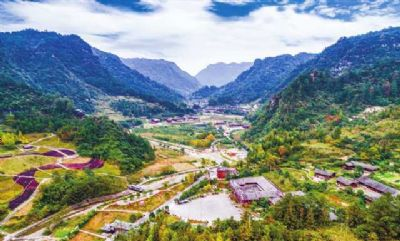
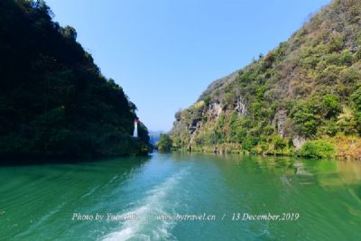

黔江区
地处武陵山腹地、渝东南中心地带，集革命老区、少数民族
聚居区、边远山区、国家扶贫开发重点区于一体，是重庆市
委、市政府确定的渝东南中心城市，也是国家《武陵山片区
区域发展与扶贫攻坚规划》定位的武陵山片区6个中心城市
之一。1988年成立四川省黔江地区，1998年撤销地区设立黔
江开发区，2000年9月，撤销黔江开发区和黔江自治县，设
立黔江区。
黔江区介于东经108°28′～108°56′、北纬29°04′～
29°52′之间，东西宽45公里、南北长90公里，幅员面2402平
方公里（360.3万亩），像翡翠玉梭，镶嵌在武陵山脉西东
北、西北与湖北咸丰县、利川市相邻，南及酉阳，西抵彭
水。 |
|  |
濯水古镇位于重庆市黔江区濯水镇境内，距黔江主城26公里，渝怀铁路、渝湘高速公路、国道319线穿境而过，距舟白机场26公里，交通便利。濯水古镇兴起于唐代，兴盛于宋朝，明清以后逐渐衰落，是渝东南地区最富盛名的古镇之一。作为重庆旧城老街的典型，濯水古镇街巷格局保留较为完整，具有浓郁的渝东南古镇格局，它既体现了与其他城市历史街区的差异，也承载着巴文化、土家文化与汉文化的融合、传承与创新，同时码头文化、商贾文化、场镇文化相互交织。濯水初称“白鹤坝”，元明之际属酉阳土司辖地。重要的商业地理位置，使濯水自古以来便成为重要的驿站和商埠 |
|  |
黔江土家十三寨，位于重庆市黔江区小南海镇北部地区的板夹溪流域，距黔江城区41公里，距重庆约320公里。建有中国第一座土家族生态博物馆，由武陵山民俗生态博物馆展示中心和十三个依山布建的自然村寨组成。山势依山就势、竹树掩映、溪水相拥，终年四季有锦鸡、白鹤、山羊、猴群栖息出入其间。在黔江的深山明珠小南海旁，板夹溪蜿蜒潺潺，溪水流经之处，间错分布着13个土家山寨，多为吊脚木楼聚合而成。山寨依山就势、竹树掩映、溪水相拥，终年四季有锦鸡、白鹤、山羊、猴群栖息出入其间。板夹溪土家十三寨是目前中国规模最大、最美的土家原生态集居带 |
|  |
|
蒲花暗河从渝湘调整濯水互通下道，经濯水古镇，逆蒲花河约3公里，暗河长1公里多，是阿蓬江旅游链上的关节点。景区由天生三桥，地下暗河、大漏斗、间歇泉、蒲花峡谷和蒲花生态农业园区组成。暗河上150多米高空三桥飞架、蔚为奇观，名为“黑龙潭”的大漏斗神秘莫测，暗河两岸，钟乳石笋，鬼斧神工。出河入峡，潺潺流水 |
|